Sign-Up & Onboarding Redesign
Design Challenge
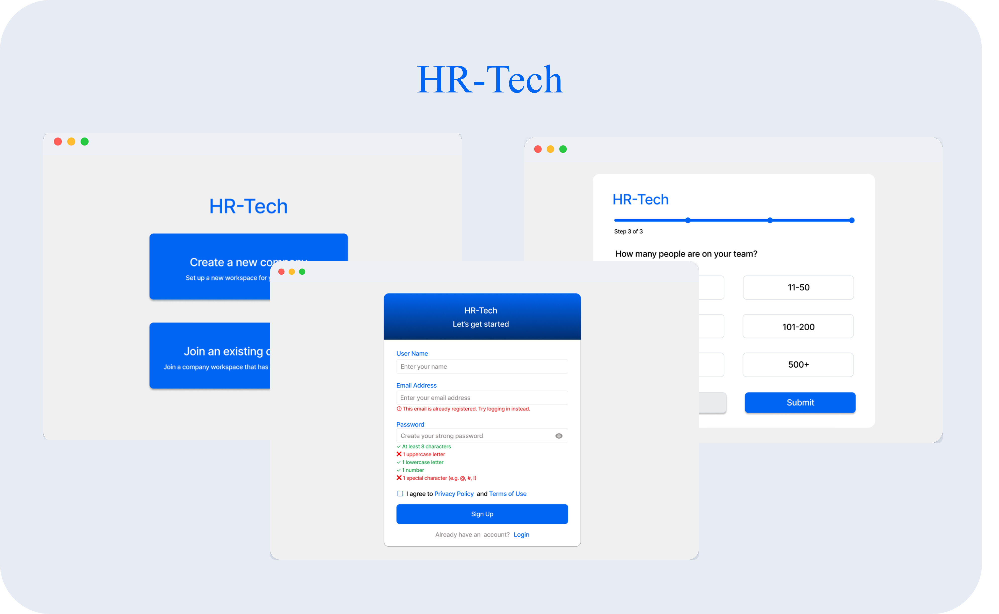
✨ Overview
ROLE
UX/UI Designer
PLATFORM
Desktop web
Timeline
2026
TOOLS
Figma
DELIVERABLES
UX audit, improved user flow, redesigned sign-up and onboarding screens
OVERVIEW
I was given the sign-up experience of an HR-tech platform as a design challenge: a login page, a registration page, a 3-step company onboarding, and a dashboard. Users were abandoning sign-up partway through, invited employees were asked for company details their HR admin had already set up, and form errors only appeared after clicking the button. I audited the journey, separated the flows by user type, and redesigned the forms with clearer questions and live validation, so sign-up is faster and easier to understand.
✨ The Challenge
Problem Framing
Sign-up is a user’s first impression of a product, and for this HR-tech platform it was losing people before they ever reached the dashboard. Users abandoned onboarding partway through, invited employees were treated like new company creators, and form errors appeared too late to be useful. The flow assumed everyone was the same person, with the same knowledge, at the same stage.
Pinpointing Issues
The first three were reported by users. I found the rest while auditing the screens.
High Drop-Off: Many people abandoned sign-up partway through onboarding.
One Flow for Everyone: Invited employees were asked for company details their HR admin had already set up.
Late, Unhelpful Errors: People only learned their password was too weak, or their email was already registered, after clicking the button, and the messages didn’t say how to fix it.
Mismatched Questions: Step 1 was titled “How big is your team?” but asked for the company name and domain, so the title didn’t match the questions beneath it.
Unnecessary Required Fields: Tax ID was required, even though formats differ by country and not every employee knows it, which pushes people to give up.
Unclear Labels and Choices: Only six industries
were shown, “Location” didn’t say whether to enter
a country or an address, and the final step’s button
said “Continue” when no more steps remained.
✨ UX Audit
I annotated the existing screens to find what caused each problem:
| What I found | Why it hurts | What I changed |
|---|---|---|
| Step 1 was titled “How big is your team?” but asked for company name and domain | The title didn’t match the questions, which was confusing | Renamed it “Company Information” |
| Tax ID was required | Tax ID formats differ by country, and people who don’t know it give up | Made it optional |
| Industry showed only 6 options | Too few options for a real company | Searchable dropdown |
| “Location” field | Unclear whether to enter a country or an address, and some companies are remote or multi-country | “Country/Region of Base” |
| Last step (Step 3 of 3) said “Continue” | Suggested another form was coming | Changed to “Submit” |
| Everyone got the company form | Invited employees saw questions that didn’t apply to them | Split into separate flows |
| Errors appeared after clicking Sign Up | Users couldn’t fix problems as they typed | Inline validation |
✨The Solution and Improved Flow
I redesigned the journey around who is signing up.
User Flow
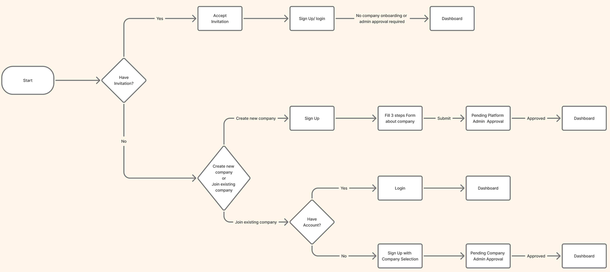
I separated the invited employee and new company registration flows, so only the person creating a new company needs to fill in the company information form. This prevents invited employees from being asked for company details that have already been set up by their HR admin and reduces confusion during sign-up.
I also simplified and improved the form UX to reduce sign-up drop-off. I added comments to each page in the Figma design to explain the changes, such as clearer questions, optional Tax ID, searchable industry selection, and clearer actions.
For form errors, I added inline validation to show errors and requirements while users are entering their email and password, so they can understand how to fix them before clicking Sign Up.
- Invited employee: Accept invitation → sign up or log in → dashboard (no company form, no admin approval)
- New company: Sign up → 3-step company form → submit → platform admin approval → dashboard
- Existing company, has account: Log in → dashboard
- Existing company, no account: Sign up and choose your company → company admin approval → dashboard
✨ Key Design Decisions
Create new company flow
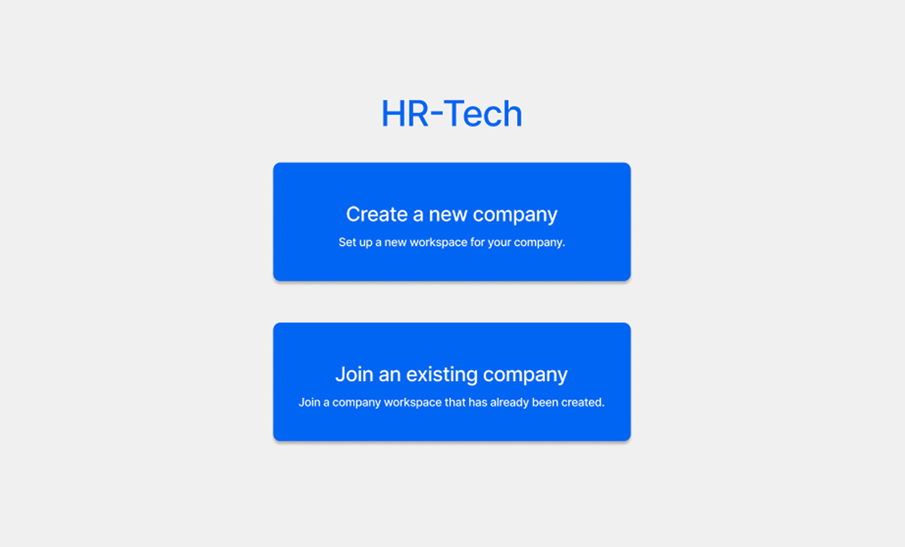
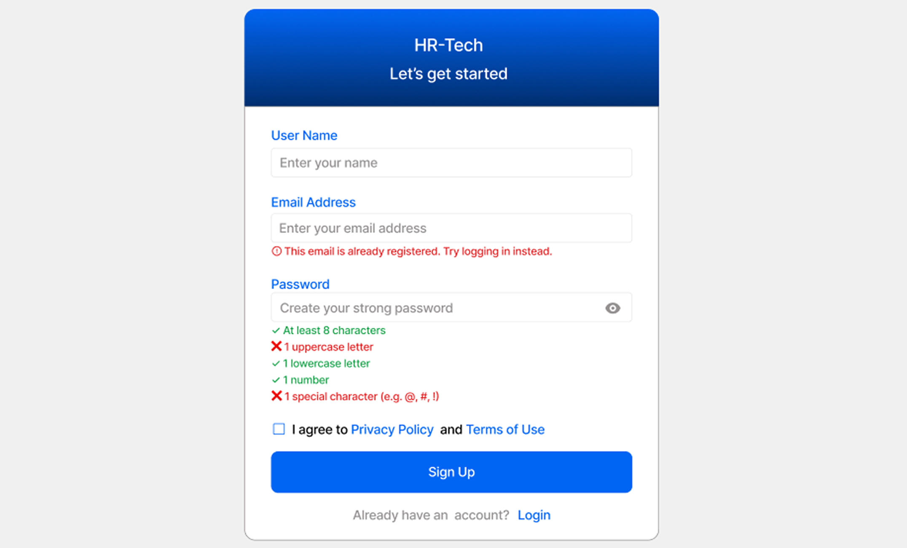
Show errors and requirements while entering email/password, so users can fix them before clicking signup
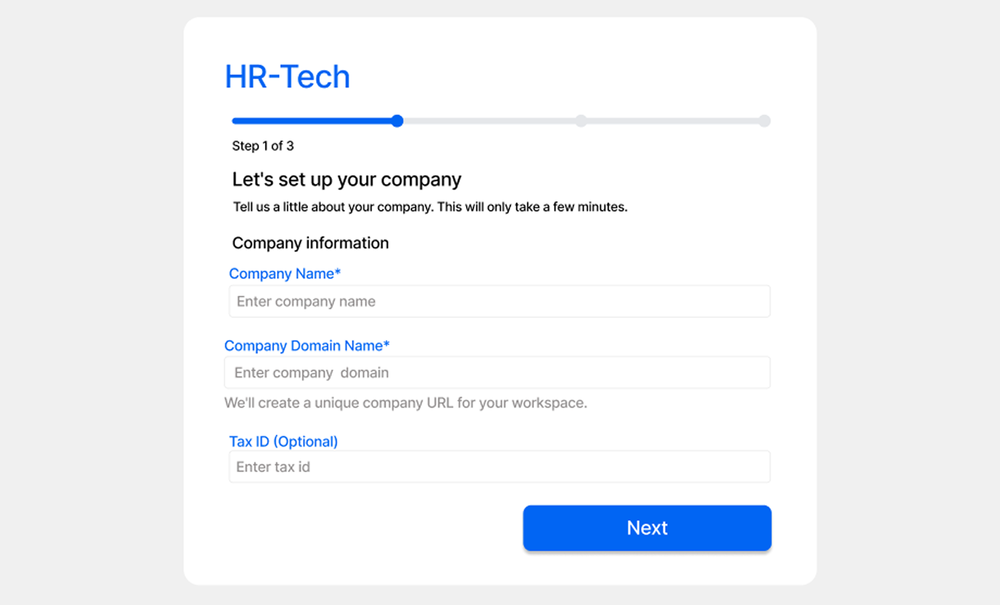
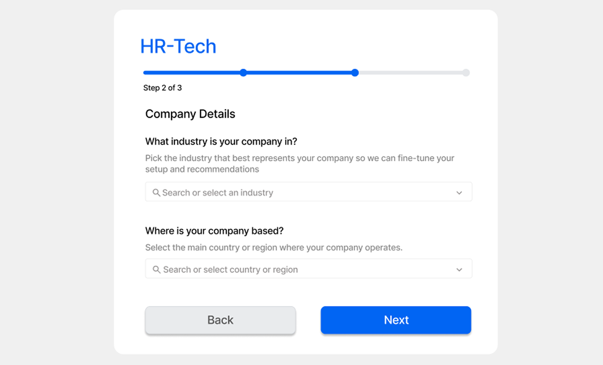
Old one: The title is “How big is your team?”, but under this title, it asks for the company name and domain. It does not suit the question at all and does not make sense.
So, I changed it to “Company Information” for Company Name, Domain, and Tax ID.
I made Tax ID optional because different countries have different types of tax IDs.
The person who creates the company has to fill out this form, so other employees do not need to fill it out. This helps avoid “Many people abandon sign-up partway through onboarding” because not every employee may know the company’s Tax ID, which could cause them to abandon the sign-up process.
I changed the industry box selection to a searchable dropdown because there are many industries, so we cannot show only 6 options.
For location, showing only “Location” can be confusing because users may not know whether they should enter their country or exact address details. I changed it to “Select Country/Region of Base” because some companies are remote or hybrid, and some companies operate in multiple countries.
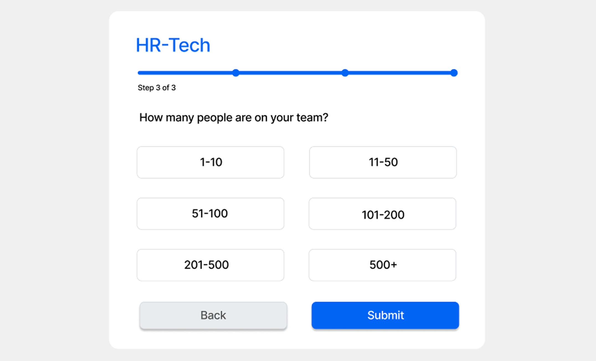
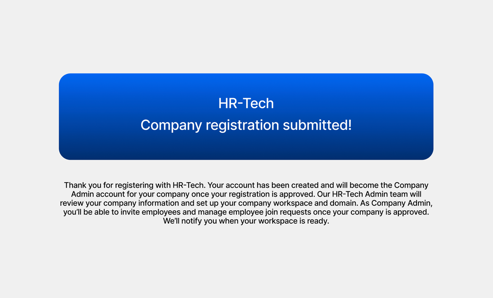
The page says “Step 3 of 3,” but the button says “Continue,” which may make users think there is another form to fill out. So, I changed it to a “Submit” button.
After submitting, the HR-Tech main admin will review and approve the company registration.This helps prevent unauthorized or unnecessary company registrations.
Invited employee Flow
Inivitation Link


For invited employees, they cannot change the email because it is automatically filled based on the invitation email. The system recognizes the invited email, so no additional admin approval is required. They can access the dashboard directly after completing the sign-up process.
Normal Employee (non-invited) Flow
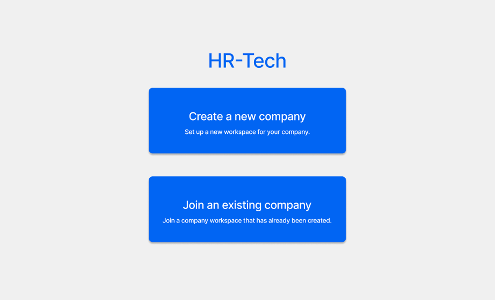
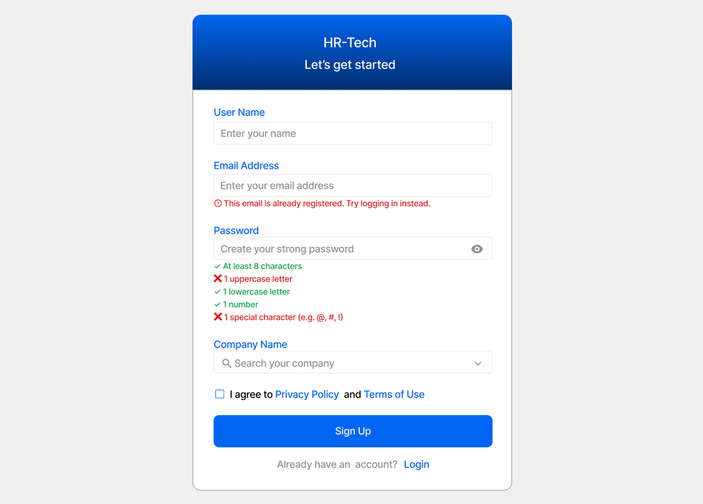
For non-invited employees, they can request to join by choosing their company from the search bar and waiting for the company admin to approve their request. Once they are approved, they can access the dashboard anytime by logging in.
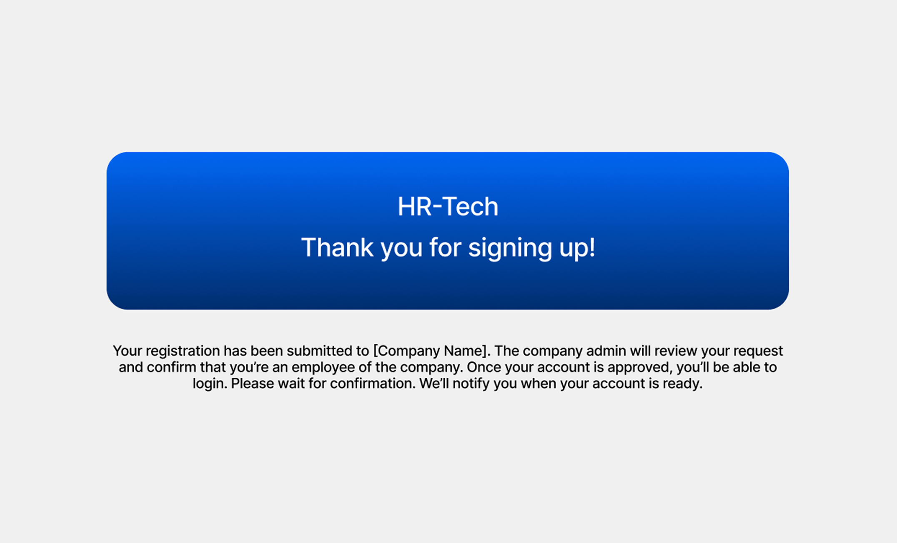
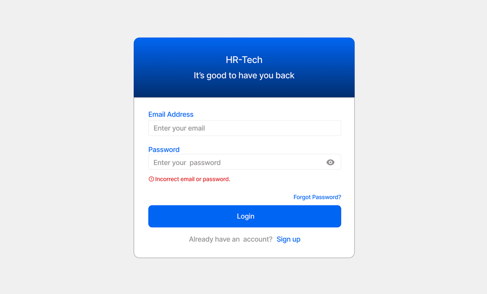
✨ Reflections
Key Takeaways

Match the flow to the user: Invited employees, new companies, and joining employees need different paths.

Ask only what’s needed: Optional fields and clearer questions reduce drop-off.

Help people fix errors as they type: Live validation is faster than a message after submitting.

Words are part of the design: Titles and buttons that don’t match the content confuse people as much as layout does.
Thank you for checking out this project! 💙